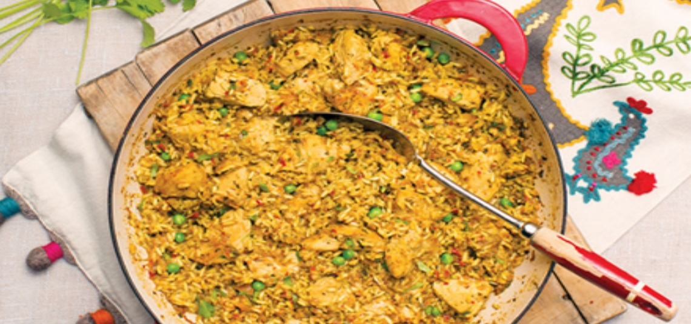
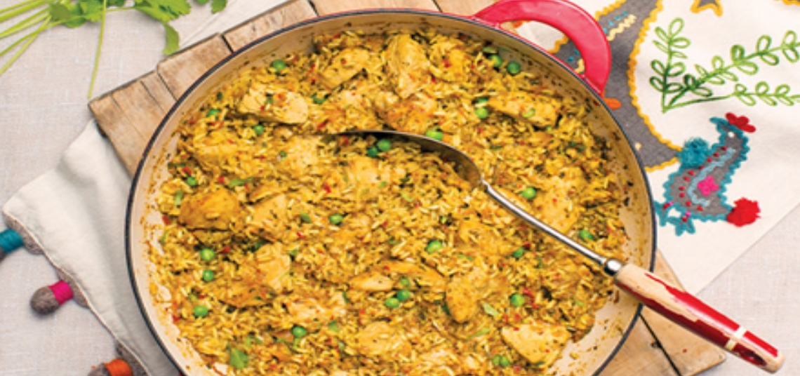

Food & Diet
Our favourite healthy eating plans and recipes to make you feel great from the inside out


 

Sautéed Fruits
Heat boosts the sweetness of fruits. Berries, which are in season now and get their rich color from disease-fighting anthocyanins, are great candidates for a quick sauté.
Good for
A syrup stand-in on French toast; a mixer for oatmeal or Greek yogurt
Caramelized Onions
Veggies have natural sugars, too. When onions are cooked over low, slow heat, their complex sugars break down into simpler ones, yielding a slightly sweet flavor. Onions also contain the antioxidant quercetin, which may help lower your risk for certain cancers.
Good for
Topping for a sandwich, baked potato, or pizza; an omelet filling
Dried Dates
Because fruit is comprised largely of water and sugar, drying concentrates its sugar content, amping up sweetness. Dried dates in particular add a high sweet factor, plus nutrition in the form of fiber—just one Medjool date delivers up to 6 percent of your recommended daily fiber intake.
Good for
A honey substitute in smoothies; blended with almond milk and ice for a healthy shake; a binder in fruit-and-nut bar recipes
Arroz Con Pollo
About
Arroz con pollo (rice with chicken) is a staple dish in every Latin-American household. Unfortunately, it’s now commonly made with spice packets filled with MSG. Instead, Ramirez opts for fresh oregano, turmeric, and saffron to achieve the same authentic flavor. Research suggests that oregano and turmeric have powerful anti-inflammatory and anti-cancer properties, while saffron may help prevent post-exercise muscle pain or weakness.
Ingredients
Preparation
Nutrition Information
Watermelon mojito smoothie
About
Instead of using rum and simple syrup, Ramirez opts for summer fruits and chia seeds for a fiber boost.
Ingredients
Preparation
Nutrition Information
Pico de gallo crostini
About
Pico de gallo is a traditional Mexican salsa. Serve it on a whole-wheat baguette instead of fried tortilla chips, and give it a Cuban twist by replacing tomato with sweet mango. The salsa with creamy avocado infuses healthy fats.
Ingredients
Preparation
Nutrition Information
Vegan flan
About
Flan is typically made with eggs, condensed milk, and whole milk. In this vegan version, Ramirez swaps the dairy for light coconut milk, tofu, and agar (a sea vegetable that adds a gelatinous texture). And instead of heavily processed sugars, she uses maple syrup and Sucanat sugar, an unrefined cane sugar that retains its molasses content, preserving trace amounts of iron and calcium. This vegan flan is still a sweet splurge, but the swaps nix some sugar.
Ingredients
Preparation
Nutrition Information
Mindful Eating Meditation
This meditation by Jamie Zimmerman, M.D., will help you learn to handle food cravings with awareness and intention. You’ll use the acronym STOP to help you through moments of fear and weakness. “S” stands for simply that: stop. “T” stands for "take three deep breaths." “O” stands for “observe." “P” stands for “proceed," in a way that supports you and those around you. You’ll use this acronym to understand where the craving is coming from and what it means. What thoughts are going through your head right now? What is your craving telling you? What do you imagine will happen if you act on the craving? Breathe deeply and allow yourself to discover what you truly need.
Eating Meditation Video
This meditation will guide you to a greater appreciation of and for the foods you eat. Useful for anyone who would like to become more conscious of their relationship with food.